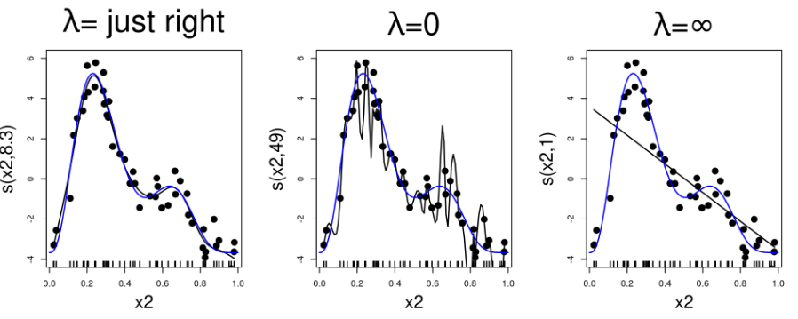
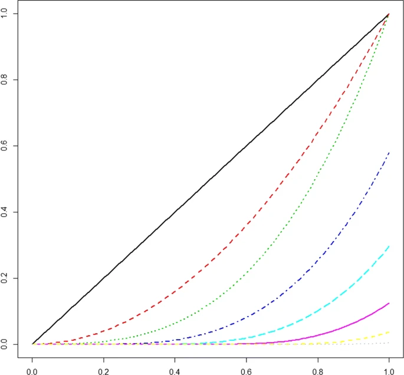
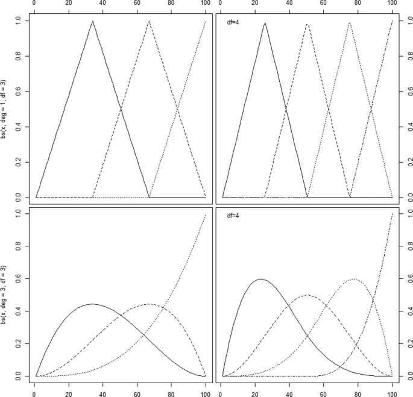
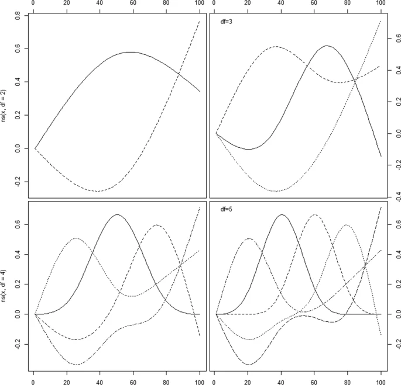

Splines
Misc
- Knots are placed at several places within the data range with (usually) low-order polynomials that are chosen to fit the data between two consecutive knots.
- Choices
- Number of knots
- Their positions
- Degree of polynomial to be used between the knots (a straight line is a polynomial of degree 1)
- The type of polynomial and the number and placement of knots is what defines the type of spline.
- e.g. cubic splines are created by using a cubic polynomial in an interval between two successive knots.
- Increasing the number of knots may overfit the data and increase the variance, whilst decreasing the number of knots may result in a rigid and restrictive function that has more bias.
- Choices
- Notes from A review of spline function procedures in R (paper)
- Also see:
- Feature Engineering, General >> Continuous >> Binning >> Harrell on the benefits of using splines vs binning
- Feature Engineering, Time Series >> Engineering >> Calendar features
- Statistical Rethinking >> (end of ) Ch 4
- Feature Engineering, Geospatial >> Cyclic Smoothing Spline
- Harrell’s RMS
- Model Building, tidymodels >> Recipe >> Transformations >> Splines
- Common variables: trend, calendar features, age, cardinal directions (N, S, E, W, etc.)
- Package Comparison
- Default types: {mgcv} uses thin plate splines (see smoothing splines) as a default for it’s
s()which makes it’s spline more flexible (i.e. curvy) than the default splines for {gam}, {VGAM}, and {gamlss} which use cubic smoothing splines.- {gamlss} doesn’t use
sbut instead has specific functions for specific types of splines
- {gamlss} doesn’t use
- P-Splines: {mgcv} and {gamlss} are very similar, and the differences can be attributed to the different way that two packages optimize the penalty weight, λ.
- {mgcv}: option, “ps” within
swill create a cubic p-spline basis on a default of 10 knots, with a third order difference penalty.- The penalty weight, λ, is optimized with generalized cross validation.
- {gamlss}:
pbdefines cubic p-splines functions with 20 interior knots and a second order difference penalty.- The smoothing parameter is estimated using local maximum likelihood method, but there are also other options based on likelihood methods, AIC, generalized cross validation and more.
- Multiple other functions available for p-splines with various attributes.
- {mgcv}: option, “ps” within
- Dependencies: {mgcv} creates its own spline functions while {gam}, {VGAM}, and {gamlss} use the base R package, {splines}.
- {gam} and {VGAM} call the base R function
smooth.spline(smoothing spline) with four degrees of freedom as default and give identical results
- {gam} and {VGAM} call the base R function
- Default types: {mgcv} uses thin plate splines (see smoothing splines) as a default for it’s
- Use Cases for Spline Types
- Thin-plate splines to model the dependency in space (latitude, longitude) as well as cyclic cubic splines for the dependency in time (hourly) (paper)
s(lon, lat, bs = ’tp’, k = 30)s(cyc, bs = "cc", k = 50)
- Penalized Cubic Splines for Hour-of-the-Day (24 knots) (e.g.
ps(hod, 24)) and Day-of-the-Week (7 knots). Periodic Cubic Splines for Season-of-the-Year (12 knots) (e.g.cp(soy, 12)). Tensor interactions between Hour-of-the-Day and Day-of-the-Week (e.g.ti(ps(hod, 24), ps(dow, 7))) (Paper)- I’m not sure if the function names are correct, but that’s what was in the formulas. {mgcv} was the package used, so those can be checked in the documentation.
- I think that Season-of-the-Year is the month of the year.
- Thin-plate splines to model the dependency in space (latitude, longitude) as well as cyclic cubic splines for the dependency in time (hourly) (paper)
Terms
- Smoothly Joined - Means that for polynomials of degree n, both the spline function and its first n-1 derivatives are continuous at the knots.
Tuning Parameters
- B: Basis functions (e.g. B-Spline)
- d: The degree of the underlying polynomials in the basis
- Typically d = 3 (cubic) is used (>3 usuallly indistinguishable)
- K: Number of knots for Regression Splines
- Usually k = 3, 4, 5. Often k = 4
- Harrell (uses natural splines): “For many datasets, k = 4 offers an adequate fit of the model and is a good compromise between flexibility and loss of precision caused by overfitting”
- If the sample size is small, three knots should be used in order to have enough observations in between the knots to be able to fit each polynomial.
- If the sample size is large and if there is reason to believe that the relationship being studied changes quickly, more than five knots can be used.
- Harrell (uses natural splines): “For many datasets, k = 4 offers an adequate fit of the model and is a good compromise between flexibility and loss of precision caused by overfitting”
- There should be at least 10–20 events per degree of freedom (Harrell, RMS)
- Variables that are thought to be more influential on the outcome or more likely to have non-linear associations are assigned more degrees of freedom (i.e. more knots)
- Flexibility of fit vs. n and variance
- Large n (e.g. n ≥ 100): k = 5
- Small n (e.g. n < 30): k = 3
- Can use Akaike’s information criterion (AIC) to choose k
- This chooses k to maximize model likelihood ratio of χ2 − 2k.
- Cross-Validation is also valid
- Also option for knot positions
- Locations not important in most situations
- Place knots where data exist e.g. fixed quantiles of predictor’s marginal distribution (See Regression Splines >> B-Splines for examples)
- From Harrell’s RMS
.resources/Screenshot (1370).png)
- From Harrell’s RMS
- Usually k = 3, 4, 5. Often k = 4
- λ: Penalty weight for Smoothing Splines
- Calculated by generalized cross-validation in {mgcv} which is an approximation of LOO-CV
- See article or Wood’s GAM book or Elements of Statistical Learning (~pg 244) for details
- Calculated by generalized cross-validation in {mgcv} which is an approximation of LOO-CV
{kind=link}
Interpretation
- A regression fit will result in estimated coefficients for each parameter used in the splines.
- Other than including them in technical appendices, in almost all cases, one does not present these estimated coefficients – their interpretation is essentially meaningless.
- Visual interpretations of the predicted response vs the splined variable are useful in discovering trends or patterns.
- Predicted responses, given representative values, outlier values, or any values of interest of the splined variable, are useful in calculating various contrasts.
- Effective Coefficient
It shows how the effect of the variable on the response varies over its range
Think this is only possible for a natural spline
Example: Age on Survival in Titanic dataset (link)
model_02 <- glm(Survived ~ SibSp + ns(Age, df = 3) + Pclass + Parch + Fare, data = titanic, family = binomial) # # Create a data frame for prediction: only `Age` will vary. # N <- 101 x <- titanic[which.max(complete.cases(titanic)), ] df <- do.call(rbind, lapply(1:N, function(i) x)) df$Age <- with(titanic, seq(min(Age, na.rm=TRUE), max(Age, na.rm=TRUE), length.out=N)) # # Predict and plot. # df$Survived.hat <- predict(model_02, newdata=df) # The predicted *link,* by default with(df, plot(Age, Survived.hat, type="l", lwd=2, ylab="", main="Relative spline term")) mtext("Spline contribution\nto the link function", side=2, line=2) # # Plot numerical derivatives. # dAge <- diff(df$Age[1:2]) delta <- diff(df$Survived.hat)/dAge age <- (df$Age[-N] + df$Age[-1]) / 2 plot(age, delta, type="l", lwd=2, ylab="Change per year", xlab="Age", main="Spline Slope (Effective Coefficient)")- The varying coefficient is computed by calculating the first derivatives numerically: divide the successive differences in predicted values by the successive differences in age.
- At Age near 35 the effective slope is nearly zero, meaning small changes of Age in this range have no effect on the predicted response. Near ages of zero, the effective slope is near −0.15, indicating each additional year of Age reduces the value of the link function by about 0.15. At the oldest ages, the effective slopes are settling down to a value near −0.09, indicating each additional year of age in this age group decreases the link function by −0.09.
{kind=link}
Regression Splines
- No penalty function added
- Splined variable is just added to the regression model like any other predictor
- Types
- Truncated Power Basis
Issue: Basis functions are not supported locally but over the whole range of the data
- Could lead to high correlations between some basis splines, implying numerical instabilities in spline estimation
Example: d = 3 (cubic) with 5 equidistant knots
Example: d = 3 with 3 knots (τ1, τ2, τ3)
\[ f(X) = \beta_0 + \beta_1 X + \beta_2 X^2 + \beta_3 X^3 + \beta_4 (X - \tau_1)^3 + \beta_5 (X - \tau_2)^3 + \beta_5 (X - \tau_3)^3 \]
- 7 dof
- B-splines
- Based on a special parameterization of a cubic spline
- See Statistical Rethinking Notebook >> (end of) Chapter 4
- Basis functions supported locally which leads to high numerical stability, and also in an efficient algorithm for the construction of the basis functions.
- Issue: can be erratic at the boundaries of the data (boundary knots)
- Degrees of freedom (dof) = d + K
bs(x)will create a cubic B-spline basis with two boundary knots and one interior knot placed at the median of the observed data values- Bounded by the range of the data
lm(y ~ bs(x))
- Example:
bs(x, degree=2, knots=c(0,.5,1))- degree specifies d
- knots specifies the number of knots and their locations
- Example:
bs(x, knots = median(x))- 1 interior knot created at the median
- 4 dof since d + K = 3 + 1
- d = 3 (default)
- Example:
bs(x, knots = c(min(x), median(x), max(x)))- 1 interior knot specified at the median and 2 boundary knots at the min and max.
- 6 dof since d + K = 3 + 3
- d = 3 (default)
- Natural Cubic and Cardinal Splines
- Stable at boundaries of data because of additional constraints that they are linear in the tails of the boundary knots
- Degrees of freedom (dof) = K + 1
ns(x)returns a straight line within the boundary knotslm(y ~ ns(x))
- Example:
ns(x,df=3)- “df” specifies degrees of freedom
- “knots”: alternatively to specifying df, you can specify the knots (# and positions) like in
bs
- Cardinal splines
- Have an additional constraint that leads to the interpretation that each coefficient \(\beta_k\) is equal to the value of the spline function at the knot \(\tau_k\)
- Truncated Power Basis
.resources/image.png){kind=link}
.resources/image.1.png){kind=link}
.resources/image.2.png){kind=link}
Smoothing Splines (aka Penalized Splines)
Automatically handles the number of knots and knot positions by using a large number of knots and letting λ control the amount of smoothness
- Different packages usually produce similar results. Penalties are very powerful in controlling the fit, given that enough knots are supplied into the function
Requires modification of the fitting routine in order to accommodate it
- Probably need a GAM package to use.
A special case of the more general class of thin plate splines
Function
\[ \hat{\beta} = \arg\max_{\beta} [l_\beta (x_1, y_1, \ldots, x_n, y_n) - \lambda J_\beta] \]
- The maximization of this function implies a trade-off between smoothness and model fit that is controlled by the tuning parameter λ
- Terms
- lβ is the likelihood
- Jβ (penalty function) is the roughness penalty (expresses the smoothness of the spline function)
- For a gaussian regression this is the integrated second derivative of the spline function (see paper for more details)
Example:
\[ ||y-f||^2 + \lambda \int \left(\frac {\partial^2 f(\text{log[baseline profit]})}{\partial \; \text{log[baseline profit]}^2}\right)^2 \partial x \]
- For a gaussian regression this is the integrated second derivative of the spline function (see paper for more details)
- λ is a tuning parameter that’s ≥0
B-Spline basis is typically used
Not easy to specify the degrees of freedom, since they will vary depending on the size of the penalty
- Usually can be restricted to a maximum number of degrees of freedom or desired degrees of freedom
Penalized Regression Splines
- Approximation of a smoothing spline
- Best used when n is large and the variable range is covered densely by the observed data
- P-Spline
- Based on the cubic B-spline basis and on a ‘large’ set of equidistant knots (usually, 10–40)
- Simplifies the calculation of Jβ (see paper for more details)
- Packages: {mgcv}, {gamlss} (See above, Misc >> Package Comparison)
Interactions
Numeric spline varying by indicator
s(log_profit_rug_business_b, by = treatment)- Coefficient is a conditional average treatment effect (CATE)
- Creates the main effect and the interaction